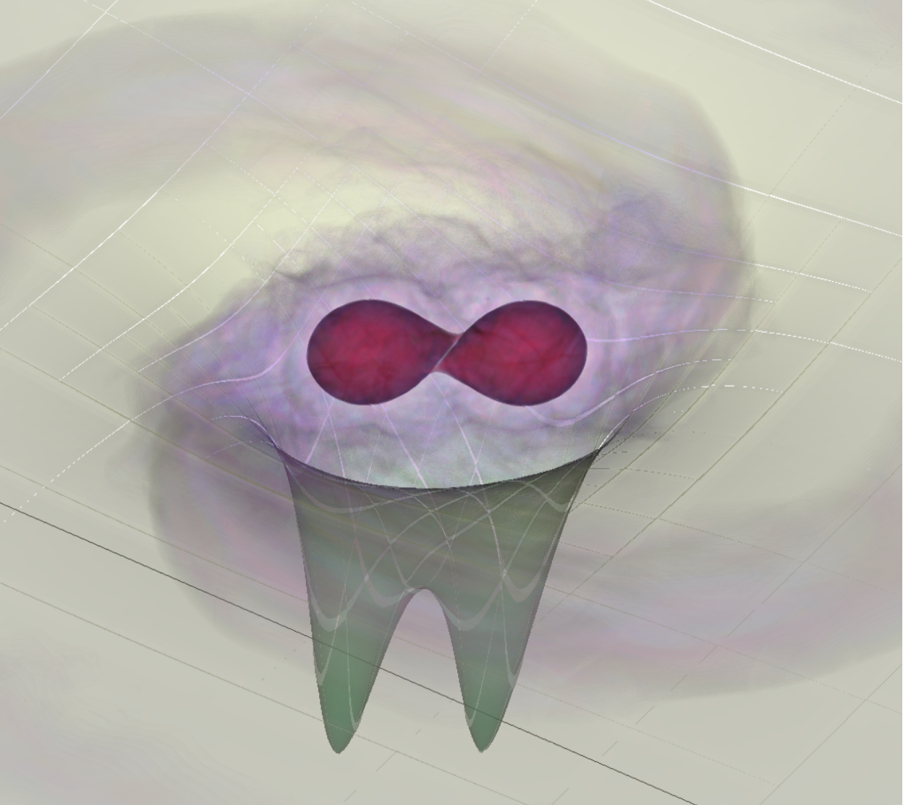

Multimessenger signatures from binary neutron star mergers

Binary neutron star mergers are among the most violent events in the Universe, producing gravitational waves, electromagnetic radiation across the spectrum, and potentially high-energy neutrinos. These events serve as cosmic laboratories for studying matter under extreme conditions and are key sources for multimessenger astronomy.
The recent detection of GW170817 by LIGO/Virgo, accompanied by electromagnetic observations across the spectrum, has opened a new era in astrophysics. These observations have provided unprecedented insights into the equation of state of neutron star matter, the origin of heavy elements, and the physics of relativistic jets.
My work in this area focuses on understanding the post-merger phase, where the remnant system can produce powerful electromagnetic signals. Using numerical simulations, we investigate how magnetic fields evolve during and after the merger, and how these fields contribute to the launching of relativistic outflows and the subsequent electromagnetic emission.
Key aspects of this research include: